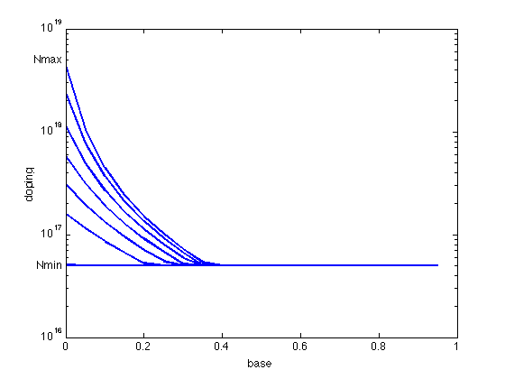

Optimal doping profile optimization with current gain constraint.
M = 20;
g1 = 0.42;
g2 = 0.69;
Nmax = 5*10^18;
Nmin = 5*10^16;
Nref = 10^17;
Dn0 = 20.72;
ni0 = 1.4*(10^10);
WB = 10^(-5);
C = WB^2/((M^2)*(Nref^g1)*Dn0);
beta_min_GE = [1 1.4 1.8 2.2 2.6 3.0 3.4 3.43]*(1e-11);
pwi = g2 -1;
pwj = 1+g1-g2;
v_array = [];
for k = 1:length(beta_min_GE)
cvx_begin gp quiet
variables v(M) y(M) w(M)
tau_B = C*w(1);
minimize( tau_B )
subject to
v >= Nmin;
v <= Nmax;
for i=1:M-1
if( mod(i,100) == 0 ), fprintf(1,'progress counter: %d\n',i), end;
y(i+1) + v(i)^pwj <= y(i);
w(i+1) + y(i)*v(i)^pwi <= w(i);
end
y(M) == v(M)^pwj;
w(M) == y(M)*v(M)^pwi;
disp(['Solving for beta_min_GE = ', num2str(beta_min_GE(k))])
(WB*beta_min_GE(k)/(M*Nref^(g1-g2)*Dn0))*y(1) <= 1;
cvx_end
v_array = [v_array v];
end
figure, clf
nbw = 0:1/M:1-1/M;
for k = 1:length(beta_min_GE)
semilogy(nbw,v_array(:,k),'LineWidth',2); hold on;
end
axis([0 1 1e16 1e19]);
xlabel('base');
ylabel('doping');
text(0,Nmin,'Nmin ', 'HorizontalAlignment','right');
text(0,Nmax,'Nmax ', 'HorizontalAlignment','right');
hold off;
Solving for beta_min_GE = 1e-11
Solving for beta_min_GE = 1.4e-11
Solving for beta_min_GE = 1.8e-11
Solving for beta_min_GE = 2.2e-11
Solving for beta_min_GE = 2.6e-11
Solving for beta_min_GE = 3e-11
Solving for beta_min_GE = 3.4e-11
Solving for beta_min_GE = 3.43e-11
